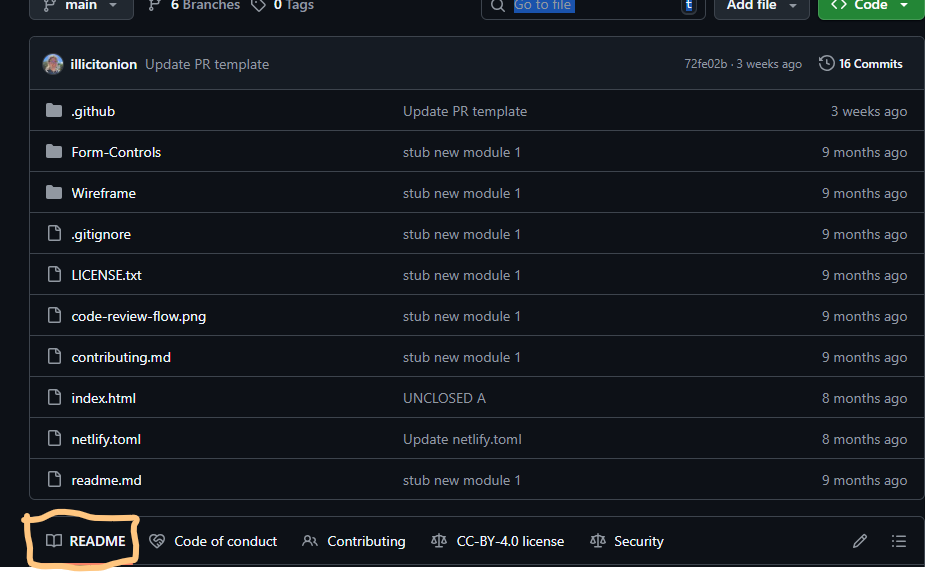
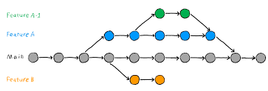

What is a readme file?
A readme file informs anyone looking at your repository what your project is about. It lets them know how to install it (if its an application) and how to use it.
Read more
What is a readme file for or what is the purpose of a wireframe and what is a git branch?
Read below to find out!

A readme file informs anyone looking at your repository what your project is about. It lets them know how to install it (if its an application) and how to use it.
Read more
The purpose of a wireframe is to provide visual understanding for a web page layout. In other words, it shows the layout of webpage so clients can sign off on the layout before any extra creative work goes into it.
Read more
A branch in Git is like a seperate workspace that is contained within the project where any changes made won't affect the main repository.
Read more